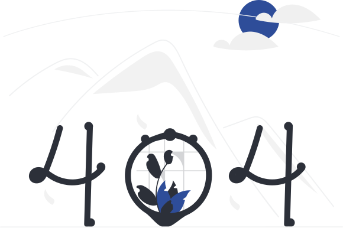

Такой страницы не существует
Вернитесь на главную или воспользуйтесь навигацией сайта
Вернуться на главнуюВернитесь на главную или воспользуйтесь навигацией сайта
Вернуться на главнуюОставьте заявку, наш менеджер свяжется с Вами в ближайшее время и ответит на все интересующие вопросы.
Наш менеджер свяжется с Вами в ближайшее время ответит на все интересующие вопросы и поможем даже в самых сложных случаях!
Вернуться на главную
Владельцы загородного участка в поселении Краснопахорское позвонили нашим специалистам с желанием устроить систему водоснабжения дома из своего источника. Хорошим источником воды для такой системы будет является скважина, пробуренная до объемного водоносного слоя. По договорённости с клиентом для обустройства скважины был выбран пластиковый кессон. Кессон позволяет иметь простой доступ к обсадной трубе без выполнения каких-либо земляных работ, что имеет значение при необходимости обслуживания или в случае ремонтных работ. Предполагалось расположить внутри кессона оборудование для автономной работы системы водоснабжения, чтобы не занимать пространство в доме.
Обращались в компанию за уборкой после ремонта общего коридора на этаже. Загрязнения были сильными (шпатлевка, пыль, фуга и даже краска на пористой плитке), но ребята (Андрей и напарник) со своим оборудованием и средствами справились на отлично!

Следует отметить, что курс на социально-ориентированный национальный проект влечет за собой процесс внедрения и модернизации направлений прогрессивного развития. Картельные сговоры не допускают ситуации, при которой ключевые особенности структуры проекта будут преданы социально-демократической анафеме. Как уже неоднократно упомянуто, тщательные исследования конкурентов и по сей день остаются уделом либералов, которые жаждут быть подвергнуты целой серии независимых исследований.